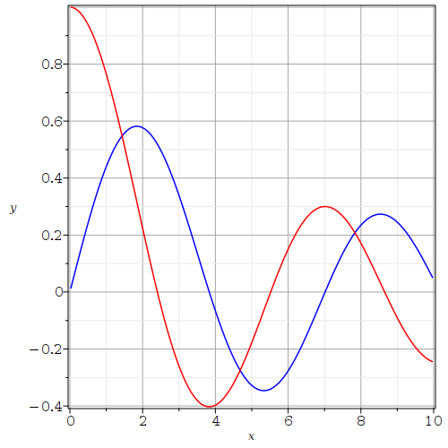
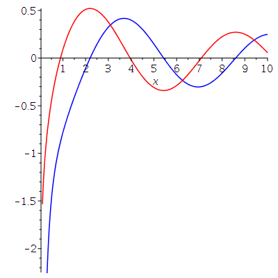

We consider two classical second order ODE with variable coeeficients. There are many more.
The Cauchy-Euler equation is
> eq1 := x^2*diff(y(x),x$2) + b*x*diff(y(x),x)+c*y(x)=0;\[ eq1 := x^2 \left( \frac{\text{d}^2}{\text{d} x^2} y(x) \right) + b x \left( \frac{\text{d}}{\text{d} x} y(x)\right) + c y(x) = 0 \]
The form of the solutions depend on the the parameters b and c. The basic idea is to suppose that a solution of this ODE is of the from \(y(x) = x^r\). If we make this substitute
> eq2 := eval( subs(y(x)=x^r, eq1) );\[ eq2 := x^2 \left( \frac{x^r r^2}{x^2} - \frac{x^r r}{x^2} \right) + b x^r r c x^r = 0 \]
and divide both side by \(x^r\), we get
> simplify( eq2/x^r );\[ r^2+ (b-1) r+c = 0 \]
The indicial equation for the Cauchy-Euler equation is \(r^2+(b-1)r+c=0\). The solution depends on the roots of this equation.
Note: The Cauchy Euler equation can be reduced to the second order linear ODE with constant coefficients \(y''(t) +(b-1) y'(t) +c y(t) = 0\) with the substitution \(x = e^t\). If \(y(t)\) is a solution of this ODE, then \(y(\ln(x))\) is a solution for the Cauchy Euler equation. The indicial equation for the Cauchy Euler equation is the characteristic equation for the second order linear ODE with constant coefficients. It therefore follows that the solutions of the Cauchy Euler equation are of three types as the solutions of the second order linear ODE with constant coefficients.
Suppose that b=c=1 in the Cauchy Euler equation.
> eq3 := subs({b=1,c=1},eq1);
\[
eq3 := x^2 \left( \frac{\text{d}^2}{\text{d} x^2} y(x) \right)
+ x \left( \frac{\text{d}}{\text{d} x} y(x)\right) + y(x) = 0
\]
The indicial equation is \(r^2 + 1 = 0\) and has two distinct complex roots (i.e. \(\pm i\) ). The general solution is
> dsolve(eq3 ,y(x));\[ y(x) = \_C1 \sin(ln(x)) + \_C2 \cos(ln(x)) \]
as expected.
To study some partial differential equations (PDE), it is important to study Boundary Value Problems for the Cauchy Euler equation. For instance, consider the Cauchy Euler equation with the boundary conditions \(y(1)=1\) and \(y(3)=2\). In theory, we have to find the values of _C1 and _C2 such that these conditions are satisfied. The function dsolve( ) can do that for us.
> dsolve({ eq3,y(1)=1,y(3)=2},y(x));
\[
y(x) = -\frac{(-2+\cos(\ln(3))) \sin(ln(x))}{\sin(\ln(3))} + \cos(\ln(x))
\]
Suppose now that \(-b=c=1\) in the Cauchy Euler equation.
> eq4 := subs({b=-1,c=1},eq1);
\[
eq4 := x^2 \left( \frac{\text{d}^2}{\text{d} x^2} y(x) \right)
- x \left( \frac{\text{d}}{\text{d} x} y(x)\right) + y(x) = 0
\]
The indicial equation is \((r-1)^2 = 0\). There is a single real root \(r = 1\). The general solution is, as expected,
> dsolve(eq4 ,y(x));\[ y(x) = \_C1 x+ \_C2 x \ln(x) \]
If we solve the Cauchy Euler equation with the same boundary conditions than before, the solution is
> dsolve({eq4,y(1)=1,y(3)=2},y(x));
\[
y(x) = x - \frac{x \ln(x)}{3 \ln(3)}
\]
We now consider the Bessel equation
> eq5 := x^2*diff(y(x),x$2)+x*diff(y(x),x) + (x^2-p^2)*y(x)=0;\[ eq5 := x^2 \left( \frac{\text{d}^2}{\text{d} x^2} y(x) \right) + x \left( \frac{\text{d}}{\text{d}x} \right) y(x) + (-p^2 + x^2) y(x) = 0 \]
The indicial equation is \(r^2-p^2 =0\) -- Solutions by power series are needed to deduce this indicial equation. It has two distinct roots when \(p \neq 0\). The general solution is
> dsolve(eq5,y(x));\[ y(x) = \_C1 BesselJ(p,x) + \_C2 BesselY(p,x) \]
BesselJ(p,x) is the Bessel function of the first kind of order \(p\), and BesselY(p,x) is the Bessel function of the second kind of order \(p\). The Bessel functions of the first kind can be expressed as infinite series around the origin but the Bessel functions of the second kind cannot (the origin is a singularity). The Bessel function of the first king of order 0 has the following series expansion near the origin.
> taylor(BesselJ(0,x),x=0,8);\[ 1 - \frac{1}{4} x^2 + \frac{1}{64} x^4 - \frac{1}{2304} x^6 + O(x^8) \]
The graphs of the Bessel functions of the first kind of order \(0\) and \(1\) are
> with(plots):
> J0 := plot(BesselJ(0,x),x=0..10, color="red"):
> J1 := plot(BesselJ(1,x),x=0..10, color="blue"):
> display({J0,J1});

Except for the Bessel functions of the first kind of order \(0\) that is \(1\) at the origin, all the Bessel functions of the first kind are \(0\) at the origin.
The graphs of the Bessel functions of the second kind of order \(0\) and \(1\) are
> Y0 := plot(BesselY(0,x),x=0.1..10, color="red"):
> Y1 := plot(BesselY(1,x),x=0.1..10, color="blue"):
> display({Y0,Y1});
